This vignette is a reference for every dataset shipped with
whychusModel. Each section gives a short description, where
the data came from, the date range currently held, and a simple
exploratory plot.
The datasets are grouped by whether the RM 8.5 delta model actually consumes them. Several were compiled during earlier exploration and are retained because they are useful context, not because the model uses them — that distinction is called out in each section so nobody wires an unused series into a future model by accident.
All compilation code lives in data-raw/pull-historical-data.Rmd
unless a section says otherwise. The datasets are rebuilt by re-knitting
that document, which calls usethis::use_data() on each
object.
# Consistent palette across the sections below.
stat_colors <- c("7DADM" = "#7B1E1E", "max" = "#F0A202", "mean" = "#899DA4",
"median" = "#9A8822", "min" = "#74A089")
# Three overlapping daily series across a decade of record smear together at
# this width, and because ggplot draws colour groups in level order "7DADM"
# lands underneath "max" and "min" — recolouring alone cannot rescue it. These
# plots give each series a different visual role instead: the daily min-max
# spread becomes a filled envelope, the daily max a hairline on its upper
# edge, and 7DADM a heavier line drawn last, on top of everything.
band_colors <- c("Daily min–max range" = "#BFCEDA",
"Daily max" = "#F0A202",
"7DADM" = "#7B1E1E")
plot_instream <- function(df, title, subtitle = NULL, threshold = NULL) {
wide <- df |>
mutate(date = as.Date(date)) |>
filter(statistic %in% c("7DADM", "max", "min")) |>
distinct(date, statistic, .keep_all = TRUE) |>
select(date, statistic, temperature) |>
pivot_wider(names_from = statistic, values_from = temperature) |>
arrange(date) |>
# Insert the absent calendar days so the line and ribbon break over
# winter deployment gaps instead of drawing straight across them.
complete(date = seq(min(date), max(date), by = "day"))
p <- ggplot(wide, aes(x = date)) +
geom_ribbon(aes(ymin = min, ymax = max, fill = "Daily min–max range")) +
geom_line(aes(y = max, colour = "Daily max"), linewidth = 0.2) +
geom_line(aes(y = `7DADM`, colour = "7DADM"), linewidth = 0.45)
if (!is.null(threshold)) {
p <- p + geom_hline(yintercept = threshold, linetype = "dashed",
colour = "grey30", linewidth = 0.4)
}
p +
scale_fill_manual(values = band_colors) +
scale_colour_manual(values = band_colors,
breaks = c("7DADM", "Daily max")) +
guides(colour = guide_legend(order = 1), fill = guide_legend(order = 2)) +
labs(title = title, subtitle = subtitle, x = NULL, y = "°C") +
theme_inputs()
}
# Compact coverage summary used in every section.
coverage <- function(dates) {
d <- as.Date(dates)
d <- d[!is.na(d)]
data.frame(
start = format(min(d)),
end = format(max(d)),
n_days = length(unique(d)),
n_rows = length(d),
n_years = length(unique(format(d, "%Y")))
)
}
theme_inputs <- function() {
theme_minimal(base_size = 11) +
theme(panel.grid.minor = element_blank(),
legend.position = "top",
legend.title = element_blank(),
plot.title = element_text(face = "bold", size = 11))
}Coverage at a glance
bind_rows(
cbind(dataset = "rm_8_5_historical", coverage(rm_8_5_historical$date)),
cbind(dataset = "camp_polk_temperature_historical", coverage(camp_polk_temperature_historical$date)),
cbind(dataset = "camp_polk_flow_historical", coverage(camp_polk_flow_historical$date)),
cbind(dataset = "dynamical_gfs_forecasts", coverage(dynamical_gfs_forecasts$valid_date)),
cbind(dataset = "all_historical_forecasts", coverage(all_historical_forecasts$valid_date)),
cbind(dataset = "sisters_air_temp_historical", coverage(sisters_air_temp_historical$date)),
cbind(dataset = "sisters_precip_historical", coverage(sisters_precip_historical$date)),
cbind(dataset = "rm_6_historical", coverage(rm_6_historical$date)),
cbind(dataset = "whychus_nr_sisters_historical", coverage(whychus_nr_sisters_historical$date)),
cbind(dataset = "whychus_at_sisters_historical", coverage(whychus_at_sisters_historical$date))
) |>
knitr::kable(caption = "Date coverage of every dataset described in this vignette.")| dataset | start | end | n_days | n_rows | n_years |
|---|---|---|---|---|---|
| rm_8_5_historical | 2011-04-28 | 2025-10-29 | 2855 | 14275 | 14 |
| camp_polk_temperature_historical | 2012-05-29 | 2026-04-14 | 4619 | 19127 | 15 |
| camp_polk_flow_historical | 2011-05-01 | 2026-04-20 | 5469 | 5469 | 16 |
| dynamical_gfs_forecasts | 2021-05-02 | 2026-09-07 | 1955 | 40929 | 6 |
| all_historical_forecasts | 2011-01-01 | 2026-08-04 | 5695 | 66999 | 16 |
| sisters_air_temp_historical | 1979-01-01 | 2025-12-31 | 17167 | 17167 | 47 |
| sisters_precip_historical | 1979-01-01 | 2025-12-31 | 17167 | 17167 | 47 |
| rm_6_historical | 2012-04-23 | 2025-10-17 | 2492 | 12460 | 13 |
| whychus_nr_sisters_historical | 2011-01-01 | 2026-04-15 | 5584 | 16855 | 16 |
| whychus_at_sisters_historical | 2001-01-01 | 2026-06-10 | 9292 | 9292 | 26 |
The model is fit on the intersection of these ranges, restricted to May through October. That intersection is bounded on the left by the dynamical.org archive (2021-05-01) and on the right by the most recent RM 8.5 logger download.
Part 1 — Datasets the RM 8.5 model uses
1.1 RM 8.5 in-stream temperature
The forecast site, and the source of both the prediction target and
the model’s persistence anchor. A single HOBO data logger deployed by
the Upper Deschutes Watershed Council at Whychus Creek river mile 8.5,
downstream of Rimrock Ranch. Sub-daily readings are aggregated to daily
mean, median, max and
min, and the 7DADM statistic is a
right-aligned 7-day rolling mean of the daily maxima.
Three quantities in the model come from this dataset:
-
rm_8_5_7dadm— the prediction target (via the7DADMstatistic) -
dadm_m0— the same series read on the run date; the value the predicted change is added back to -
tmax_m0,dadm_trend,tmax_trend— today’s daily max and the 5-day slopes of both series
Source. UDWC continuous temperature monitoring
program, monitoring location WC_008-50. Compiled from the
annual Excel submittals in
data-raw/historical-temperature/, one workbook per year
from 2011 to 2025. In-season 2026 readings arrive as separate logger
exports and are bound on at model-fit time rather than being baked into
the package object.
coverage(rm_8_5_historical$date) |> knitr::kable()| start | end | n_days | n_rows | n_years |
|---|---|---|---|---|
| 2011-04-28 | 2025-10-29 | 2855 | 14275 | 14 |
plot_instream(
rm_8_5_historical,
title = "RM 8.5 in-stream temperature",
subtitle = "Dashed line is the 20 °C HCP threshold",
threshold = 20
)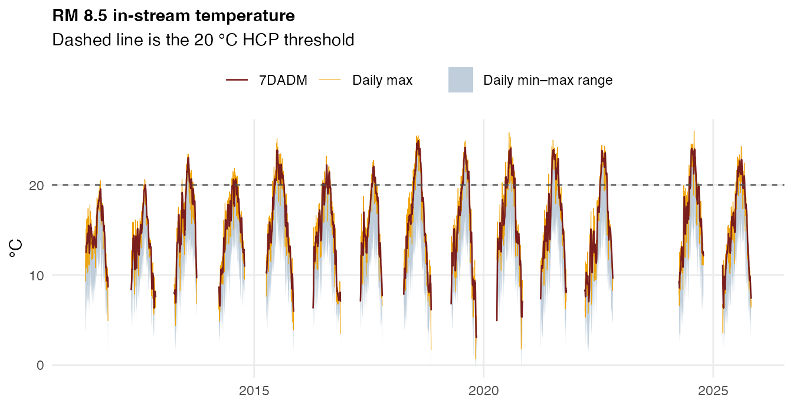
Coverage is seasonal — the logger is pulled over winter in most years, so the gaps between roughly November and April are deployment gaps, not missing data.
1.2 Camp Polk water temperature
The upstream boundary condition, about 11 river miles above RM 8.5.
Water arriving at RM 8.5 has passed Camp Polk a short time earlier, so
this is the single most informative non-local predictor in the set.
Supplies cp_7dadm, cp_tmax and
cp_7dadm_trend.
Source. Two sources merged into one series:
- Oregon Water Resources Department station 14076100,
pulled through
get_owrd_hydro()(WTEMP_MEAN/WTEMP_MIN/WTEMP_MAX) from 2011-05-01 forward - The UDWC HOBO logger at monitoring location
WC_019-50, described as “d/s Camp Polk Bridge on DBLT property”
Where the two overlap the UDWC logger takes precedence — the OWRD
record is anti-joined against the logger record before the two are
bound, so the logger fills the gaps in OWRD telemetry rather than being
averaged with it. 7DADM is computed after the merge, as a
right-aligned 7-day rolling mean of daily maxima.
coverage(camp_polk_temperature_historical$date) |> knitr::kable()| start | end | n_days | n_rows | n_years |
|---|---|---|---|---|
| 2012-05-29 | 2026-04-14 | 4619 | 19127 | 15 |
plot_instream(
camp_polk_temperature_historical,
title = "Camp Polk water temperature (OWRD 14076100 + UDWC WC_019-50)"
)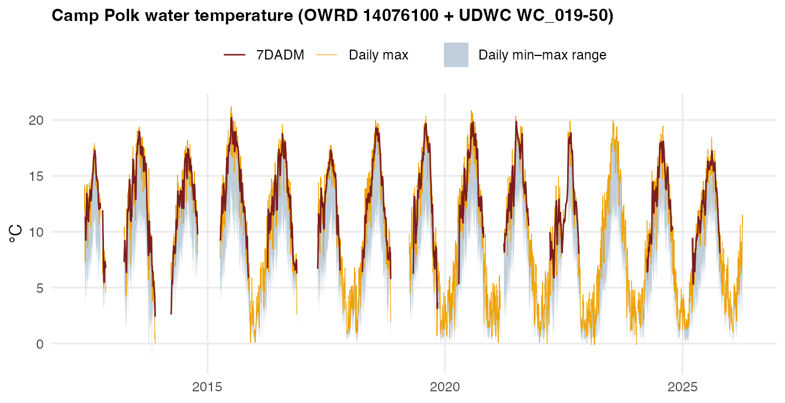
1.3 Camp Polk discharge
Mean daily flow at the same station. Flow is the volume term behind
the temperature signal: a given amount of solar heating raises a
low-flow creek further than a high-flow one, so discharge conditions how
strongly air temperature translates into water temperature. Supplies
cp_flow_mean and cp_flow_trend.
Source. OWRD station 14076100,
MDF (mean daily flow) series, via
get_owrd_hydro().
coverage(camp_polk_flow_historical$date) |> knitr::kable()| start | end | n_days | n_rows | n_years |
|---|---|---|---|---|
| 2011-05-01 | 2026-04-20 | 5469 | 5469 | 16 |
camp_polk_flow_historical |>
ggplot(aes(as.Date(date), flow_cfs)) +
geom_line(linewidth = 0.3, colour = "#378ADD") +
scale_y_log10() +
labs(title = "Camp Polk mean daily discharge", x = NULL,
y = "cfs (log scale)") +
theme_inputs()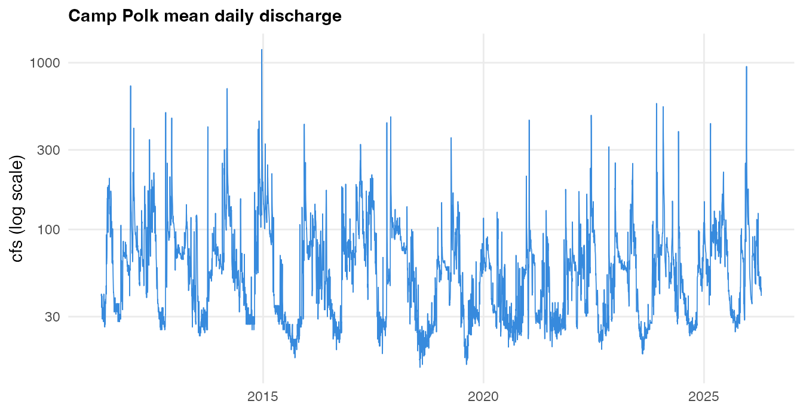
Plotted on a log scale because spring freshet peaks are one to two orders of magnitude above summer baseflow, and it is the summer baseflow range that the model is fit on.
1.4 dynamical.org GFS air-temperature forecasts
The weather side of the model, and the only input that is a
forecast rather than an observation. Supplies the full
day-1-through-day-k trajectory — air_max_d*,
air_min_d*, cloud_d* — and the four
traj_ summaries derived from it.
Source. dynamical.org republishes NOAA’s Global
Forecast System output as analysis-ready Icechunk/Zarr on public S3
(s3://dynamical-noaa-gfs, region us-west-2).
We extract the nearest grid cell to 44.390278 °N, −121.406792 °W from
the 00Z initialisation, tiling the model’s four 6-hour windows to form
calendar-day maxima, minima and cloud means at leads 1 through 7.
The Icechunk/Zarr stack has no R client, so the pull is a Python
script, data-raw/pull_dynamical_forecasts.py. It writes
data-raw/dynamical_gfs_air_temp_historical.csv, which is
the working file the puller appends to:
# full history (the dynamical.org archive begins 2021-05-01)
/opt/miniconda3/bin/python3 data-raw/pull_dynamical_forecasts.py \
--start-date 2021-05-01 --end-date 2026-09-07
# extend an existing file; dedupes on init_date, lead_days, variable
/opt/miniconda3/bin/python3 data-raw/pull_dynamical_forecasts.py \
--start-date 2026-09-01 --appenddynamical_gfs_forecasts is the packaged snapshot of that
CSV, built by the dynamical.org chunk in
pull-historical-data.Rmd. The CSV stays the working file so
the Python puller can extend it without a package rebuild; re-knit that
chunk to bring the data object up to date with it.
Its columns match all_historical_forecasts apart from
that object’s type column, so the two archives can be
compared or swapped directly. The reasoning behind choosing this source
over the alternatives is in the Choosing an Air Temperature Forecast
Source vignette.
coverage(dynamical_gfs_forecasts$valid_date) |> knitr::kable()| start | end | n_days | n_rows | n_years |
|---|---|---|---|---|
| 2021-05-02 | 2026-09-07 | 1955 | 40929 | 6 |
dynamical_gfs_forecasts |>
count(variable, lead_days) |>
pivot_wider(names_from = lead_days, values_from = n,
names_prefix = "lead ") |>
knitr::kable(caption = "Rows per variable and lead.")| variable | lead 1 | lead 2 | lead 3 | lead 4 | lead 5 | lead 6 | lead 7 |
|---|---|---|---|---|---|---|---|
| cloud_cover_mean | 1949 | 1949 | 1949 | 1949 | 1949 | 1949 | 1949 |
| temperature_2m_max | 1949 | 1949 | 1949 | 1949 | 1949 | 1949 | 1949 |
| temperature_2m_min | 1949 | 1949 | 1949 | 1949 | 1949 | 1949 | 1949 |
dynamical_gfs_forecasts |>
filter(lead_days %in% c(1, 4, 7)) |>
mutate(
variable = recode(variable,
temperature_2m_max = "Max air temp (°C)",
temperature_2m_min = "Min air temp (°C)",
cloud_cover_mean = "Cloud cover (%)"),
lead = factor(lead_days, levels = c(1, 4, 7),
labels = c("Day 1", "Day 4", "Day 7"))
) |>
ggplot(aes(valid_date, value, colour = lead)) +
geom_line(linewidth = 0.25, alpha = 0.8) +
facet_wrap(~variable, ncol = 1, scales = "free_y") +
scale_colour_manual(values = c("Day 1" = "#C93312", "Day 4" = "#899DA4",
"Day 7" = "#378ADD")) +
labs(title = "dynamical.org GFS forecasts at the Whychus Creek grid cell",
x = NULL, y = NULL) +
theme_inputs()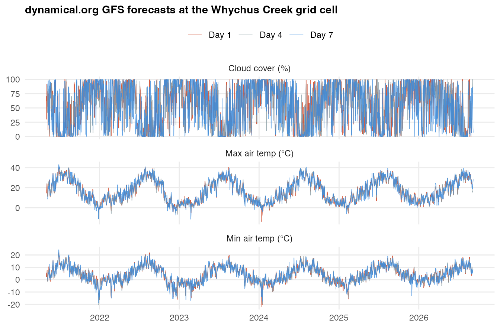
Part 2 — Superseded and reference datasets
2.1 all_historical_forecasts (superseded)
The air-temperature forecast archive the model was originally trained on. Do not use it as a forecast source. It stores a single air-temperature value per issue date, replicated identically across all seven leads, so the entire day-1-to-day-7 forecast trajectory collapses to one number. The defect is demonstrated in the air temperature source vignette.
It is retained so earlier analyses remain reproducible, and because
the type == "historical weather" rows are genuine ERA5
reanalysis observations covering 2011–2018 — those are fine.
Source. Open-Meteo Historical Forecast API for the forecast rows (GFS archived model runs, 2019 onward) and the Open-Meteo historical weather endpoint for the ERA5 rows (2011–2018), both at 44.390278 °N, −121.406792 °W.
all_historical_forecasts |>
group_by(type) |>
summarise(start = format(min(valid_date, na.rm = TRUE)),
end = format(max(valid_date, na.rm = TRUE)),
leads = paste(sort(unique(lead_days)), collapse = ", "),
n = n(), .groups = "drop") |>
knitr::kable()| type | start | end | leads | n |
|---|---|---|---|---|
| historical forecast | 2019-01-01 | 2026-08-04 | 1, 2, 3, 4, 5, 6, 7 | 58233 |
| historical weather | 2011-01-01 | 2018-12-31 | 0 | 8766 |
all_historical_forecasts |>
filter(variable == "temperature_2m_max") |>
mutate(valid_date = as.Date(valid_date)) |>
ggplot(aes(valid_date, value, colour = type)) +
geom_line(linewidth = 0.25, alpha = 0.7) +
scale_colour_manual(values = c("historical weather" = "#74A089",
"historical forecast" = "#C93312")) +
labs(title = "all_historical_forecasts — daily max air temperature",
subtitle = "Retained for reproducibility; superseded as a forecast source",
x = NULL, y = "°C") +
theme_inputs()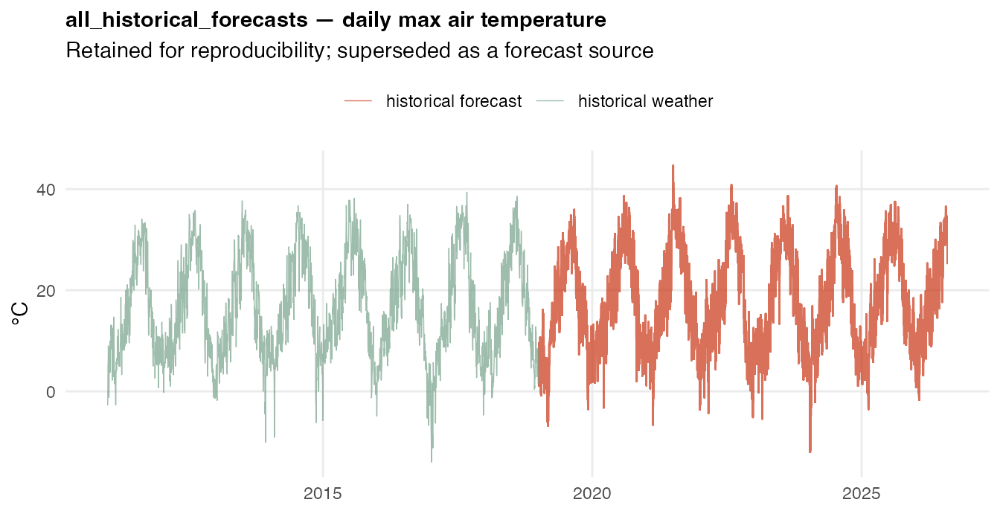
2.2 Sisters air temperature (GridMET)
Gridded observed daily air temperature near Sisters, Oregon. Not a model input — it is the reference series used to score forecast archives against reality, which is how the dynamical.org and legacy comparisons were made. Its long record (1979 onward) also makes it the natural baseline for judging how anomalous a given summer is.
Source. GridMET (~4 km gridded meteorology) pulled
with climateR::getGridMET() at 44.2896 °N, −121.5491 °W.
Variables tmmx and tmmn, converted from
Kelvin; Fahrenheit columns are derived conveniences.
coverage(sisters_air_temp_historical$date) |> knitr::kable()| start | end | n_days | n_rows | n_years |
|---|---|---|---|---|
| 1979-01-01 | 2025-12-31 | 17167 | 17167 | 47 |
sisters_air_temp_historical |>
filter(date >= as.Date("2011-01-01")) |>
select(date, tmax_C, tmin_C) |>
pivot_longer(-date) |>
ggplot(aes(date, value, colour = name)) +
geom_line(linewidth = 0.2, alpha = 0.8) +
scale_colour_manual(values = c(tmax_C = "#DC863B", tmin_C = "#899DA4")) +
labs(title = "Sisters, OR air temperature (GridMET)",
subtitle = "Record extends back to 1979; 2011 onward shown",
x = NULL, y = "°C") +
theme_inputs()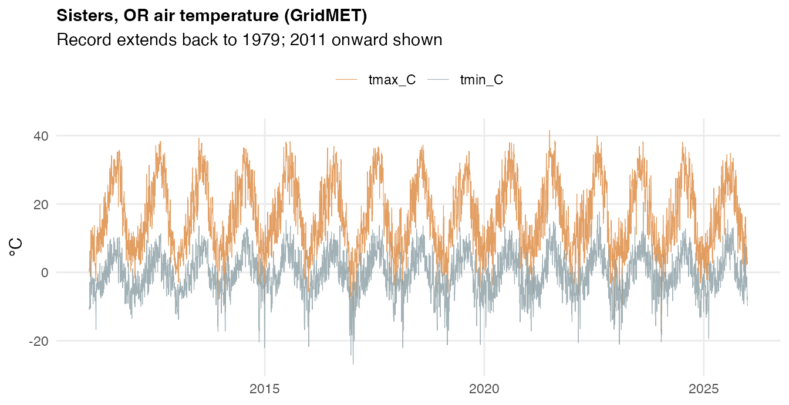
2.3 Sisters precipitation (GridMET)
Daily precipitation from the same GridMET pull, partitioned into rain and snow at a 0 °C mean-temperature threshold. Not currently a model input. Snowmelt timing is a plausible driver of summer baseflow, and therefore of summer stream temperature, but that pathway is mediated by discharge — which the model already observes directly at Camp Polk — so precipitation has not earned a place in the predictor set.
Source. GridMET pr variable, same point
and pull as section 2.2.
coverage(sisters_precip_historical$date) |> knitr::kable()| start | end | n_days | n_rows | n_years |
|---|---|---|---|---|
| 1979-01-01 | 2025-12-31 | 17167 | 17167 | 47 |
sisters_precip_historical |>
filter(date >= as.Date("2011-01-01")) |>
mutate(year = as.integer(format(date, "%Y"))) |>
group_by(year) |>
summarise(rain_mm = sum(rain_mm, na.rm = TRUE),
snow_mm = sum(snow_mm, na.rm = TRUE), .groups = "drop") |>
pivot_longer(-year) |>
ggplot(aes(year, value, fill = name)) +
geom_col() +
scale_fill_manual(values = c(rain_mm = "#378ADD", snow_mm = "#899DA4")) +
labs(title = "Sisters, OR annual precipitation by phase",
x = NULL, y = "mm") +
theme_inputs()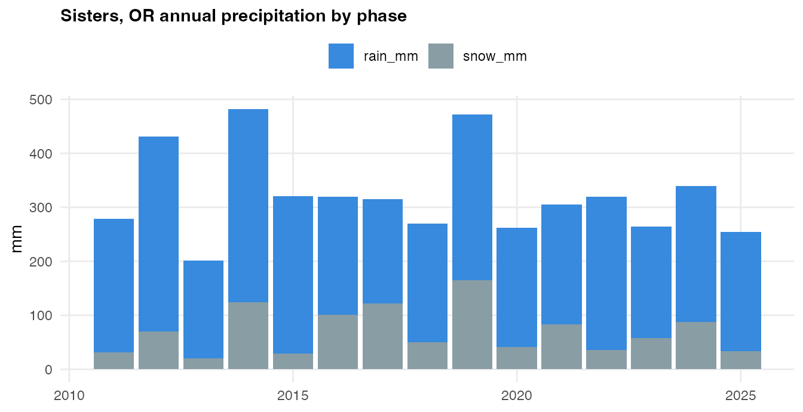
Part 3 — Other monitoring sites
These were compiled while scoping the project and are not used by the RM 8.5 model. They are documented here so the package contents are fully accounted for.
3.1 RM 6 in-stream temperature
Whychus Creek at river mile 6, about 2.5 miles downstream of RM 8.5.
The original project scope included an RM 6 forecast, and
lm_rm6_7dadm in this package is a linear model fit to it.
RM 6 is not a predictor of RM 8.5 — it is downstream, so it carries no
information the forecast could use.
Source. UDWC continuous temperature monitoring,
monitoring location WC_006-00. Between one and three
loggers are in the stream at any time; readings are averaged across all
loggers present before daily statistics are computed.
coverage(rm_6_historical$date) |> knitr::kable()| start | end | n_days | n_rows | n_years |
|---|---|---|---|---|
| 2012-04-23 | 2025-10-17 | 2492 | 12460 | 13 |
plot_instream(rm_6_historical, title = "RM 6 in-stream temperature")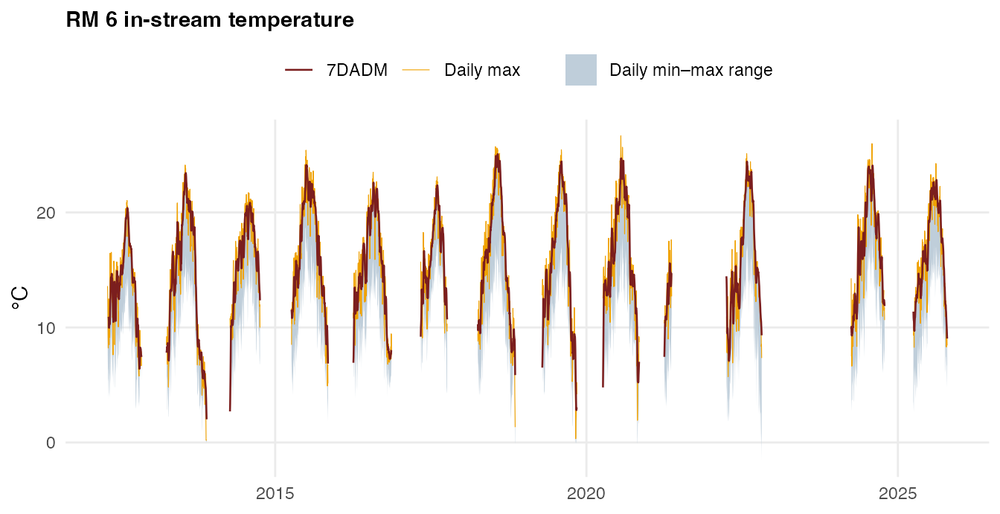
3.2 Whychus Creek near Sisters
Upstream of the town of Sisters, and upstream of Camp Polk. Collects both water temperature and discharge. It sits further from RM 8.5 than Camp Polk does and its signal is largely subsumed by the Camp Polk record, so it is not in the predictor set — but it is the natural fallback if Camp Polk telemetry fails.
Source. OWRD station 14075000, via
get_owrd_hydro().
coverage(whychus_nr_sisters_historical$date) |> knitr::kable()| start | end | n_days | n_rows | n_years |
|---|---|---|---|---|
| 2011-01-01 | 2026-04-15 | 5584 | 16855 | 16 |
whychus_nr_sisters_historical |>
ggplot(aes(as.Date(date), value, colour = statistic)) +
geom_line(linewidth = 0.3) +
facet_wrap(~variable, ncol = 1, scales = "free_y") +
scale_colour_manual(values = stat_colors) +
labs(title = "Whychus Cr nr Sisters, OR — OWRD 14075000",
x = NULL, y = NULL) +
theme_inputs()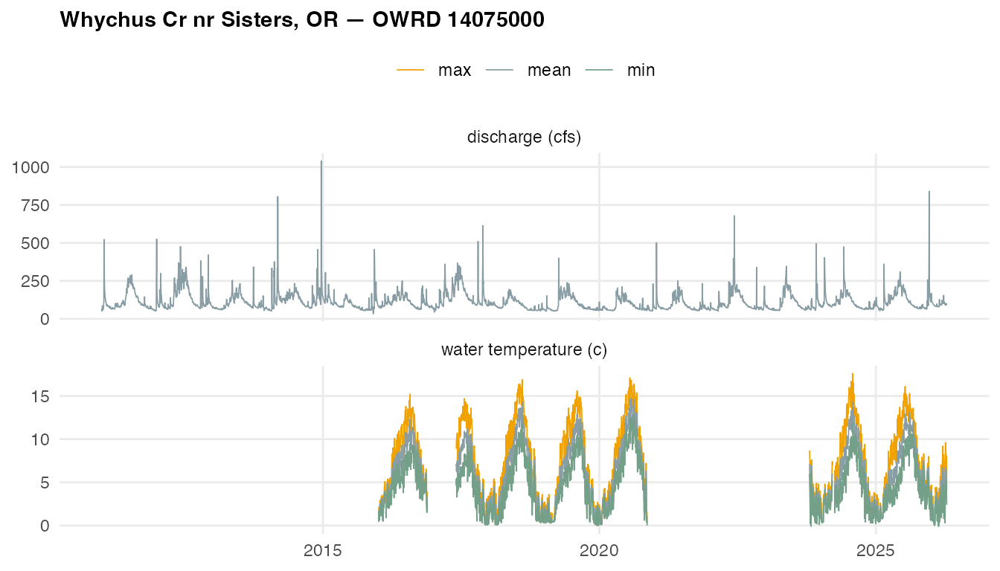
3.3 Whychus Creek at Sisters
In the town of Sisters. Discharge only — no temperature. The longest flow record in the package, back to 2001.
Source. OWRD station 14076050,
MDF series, via get_owrd_hydro().
coverage(whychus_at_sisters_historical$date) |> knitr::kable()| start | end | n_days | n_rows | n_years |
|---|---|---|---|---|
| 2001-01-01 | 2026-06-10 | 9292 | 9292 | 26 |
whychus_at_sisters_historical |>
ggplot(aes(as.Date(date), value)) +
geom_line(linewidth = 0.25, colour = "#378ADD") +
scale_y_log10() +
labs(title = "Whychus Cr at Sisters, OR — OWRD 14076050",
x = NULL, y = "Mean daily flow, cfs (log scale)") +
theme_inputs()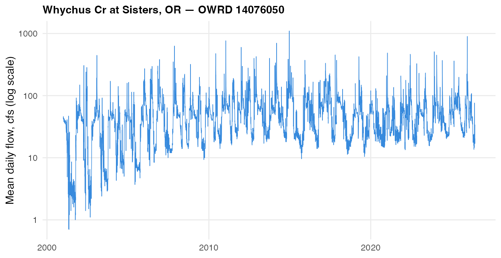
3.4 Sub-daily logger records
all_rm_8_5_dates_and_times and
all_rm_6_dates_and_times hold the individual logger
readings behind rm_8_5_historical and
rm_6_historical, so the daily statistics can be recomputed
without re-reading the annual Excel workbooks.
bind_rows(
cbind(dataset = "all_rm_8_5_dates_and_times", coverage(all_rm_8_5_dates_and_times$date)),
cbind(dataset = "all_rm_6_dates_and_times", coverage(all_rm_6_dates_and_times$date))
) |>
knitr::kable()| dataset | start | end | n_days | n_rows | n_years |
|---|---|---|---|---|---|
| all_rm_8_5_dates_and_times | 2011-04-28 | 2025-10-29 | 2855 | 73502 | 14 |
| all_rm_6_dates_and_times | 2012-04-23 | 2025-10-17 | 2492 | 75514 | 13 |
Only the RM 6 object retains time of day. The RM 6
compilation adds the workbook’s TIME column onto the date,
giving genuine hourly timestamps; the RM 8.5 compilation does not, so
every RM 8.5 reading is stamped at midnight and the several readings
that share a date are indistinguishable. Check before using either
object for anything sub-daily:
data.frame(
dataset = c("all_rm_8_5_dates_and_times", "all_rm_6_dates_and_times"),
distinct_hours = c(
length(unique(format(all_rm_8_5_dates_and_times$date, "%H", tz = "UTC"))),
length(unique(format(all_rm_6_dates_and_times$date, "%H", tz = "UTC")))
)
) |>
knitr::kable()| dataset | distinct_hours |
|---|---|
| all_rm_8_5_dates_and_times | 1 |
| all_rm_6_dates_and_times | 24 |
Timestamps are the logger’s local clock time, carried without a timezone.
all_rm_6_dates_and_times |>
mutate(hour = as.integer(format(date, "%H", tz = "UTC")),
month = as.integer(format(date, "%m", tz = "UTC"))) |>
filter(month >= 5, month <= 10) |>
group_by(hour) |>
summarise(temperature = mean(temperature, na.rm = TRUE), .groups = "drop") |>
ggplot(aes(hour, temperature)) +
geom_line(linewidth = 0.7, colour = "#C93312") +
geom_vline(xintercept = 19, linetype = "dashed", colour = "grey40") +
scale_x_continuous(breaks = seq(0, 23, 3)) +
labs(title = "RM 6 mean diurnal cycle, May–October",
subtitle = "Daily maximum falls around 17:00; dashed line is the 7 pm model run time",
x = "Hour of day", y = "°C") +
theme_inputs()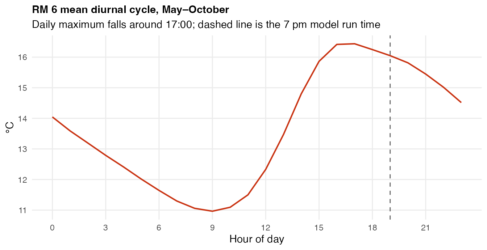
This diurnal shape is why the model is allowed to use RM 8.5’s same-day 7DADM as a predictor: at a 7 pm run time the daily maximum has already occurred. RM 6 is shown here only because it is the object that kept its timestamps — the check that actually licenses the 7 pm run time was made directly against the raw 2026 RM 8.5 logger export, where the daily maximum landed after 7 pm on 0% of days and after 6 pm on 4.1%.
Refreshing the data
| Dataset | How to refresh |
|---|---|
| RM 8.5, RM 6, Camp Polk logger | Add the new annual UDWC workbook to
data-raw/historical-temperature/, add a chunk in
pull-historical-data.Rmd, re-knit |
| Camp Polk, Whychus nr/at Sisters (OWRD) | Re-knit the relevant eval=FALSE chunk in
pull-historical-data.Rmd; get_owrd_hydro()
pulls to Sys.Date()
|
| dynamical.org GFS | Run
data-raw/pull_dynamical_forecasts.py --start-date <date> --append
to extend the CSV, then re-knit the dynamical.org chunk in
pull-historical-data.Rmd to rebuild
dynamical_gfs_forecasts
|
| Sisters air temp and precip | Re-run the climateR::getGridMET() chunk with a later
END_DATE
|
all_historical_forecasts |
Superseded — extend the dynamical.org CSV instead |
In-season 2026 RM 8.5 logger exports are deliberately
not folded into the package object. They are bound on
at fit time in analysis/rm85-rf-extended-training.Rmd,
which keeps the shipped historical record stable while an incomplete
season is still accumulating.